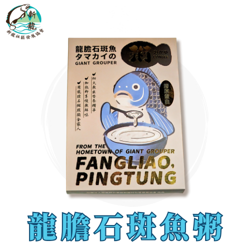
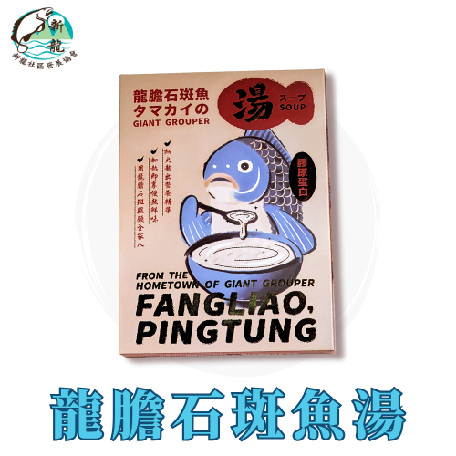

龍膽石斑魚粥
NT$300 · 580g/包
4年以上飼育的龍膽石斑，慢熬釋放膠原蛋白與鮮甜，隔水加熱即可輕鬆享用。

屏東縣枋寮鄉新龍社區發展協會
枋寮鄉 · 食漁、樂漁、慢漁
看產品坐擁豐富海洋的環境，提供最新鮮海鮮的口感。我們致力推廣三漁文化—食漁、樂漁、慢漁，也鼓勵訪客親身參與各式漁業活動。從走訪社區到品嚐在地美食，邀請您一同共享快樂、悠閒的「慢漁」時光。

NT$300 · 580g/包
4年以上飼育的龍膽石斑，慢熬釋放膠原蛋白與鮮甜，隔水加熱即可輕鬆享用。

NT$150 · 290g/包
高蛋白、低脂肪，營養豐富且口感細膩的滋補海鮮湯品。